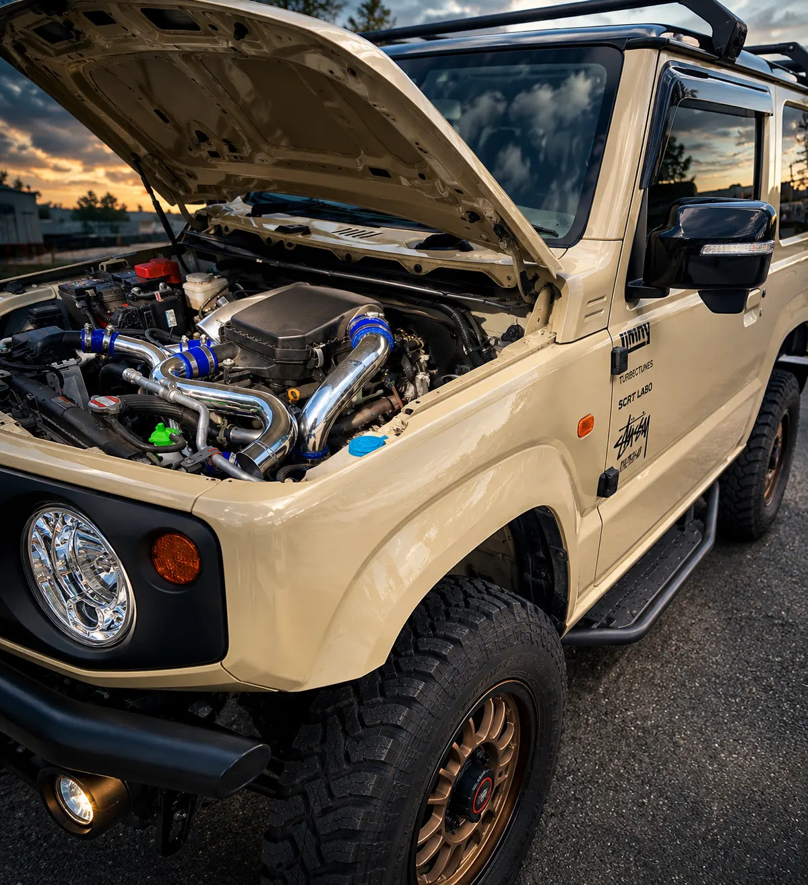

WORK 02
JB64 ジムニー ハイブリッジファースト パイピングキット取付
/ 作業事例
取付記録 // JB64

静岡県浜松市のMさんご夫婦のJB64 ジムニーです。 今回は出張で、ハイブリッジファーストのパイピングキットを取り付けました。
パイピングは、ターボで圧縮された空気をエンジンまで送る通り道です。 空気が通る部分なので、つなぎ目がゆるむと空気が漏れてしまいます。 つなぎ目は、青いシリコンのカップラーとホースバンドで固定しています。
作業のあとは、仲間も加わってBBQ。 楽しい1日になりました。
- ハイブリッジファースト パイピングキットの取付
- シリコンカップラーとホースバンドの組み付け
- GReddy ブローオフバルブの取付
Nova_83LAB にご依頼いただいた方へ。よろしければ Googleのクチコミ で感想をお聞かせください。